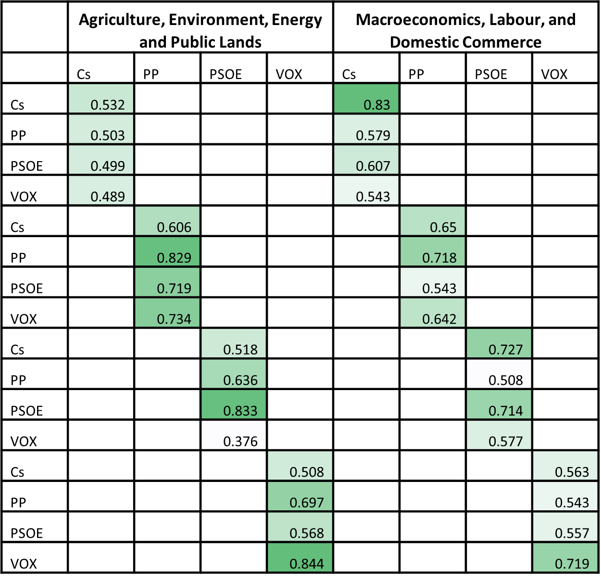

Similitud semántica
Influencia retórica
“He who wants to persuade should put his trust not in the right argument, but in the right word.”
Joseph Conrad
La medición de la influencia retórica se basa en determinar la similitud semántica entre las declaraciones de los actores en el tiempo. En la medida en que haya convergencia entre los grupos de interés/organizaciones sociales y los partidos políticos existe un indicio de que los primeros logran tener influencia sobre los segundos. A pesar de que la convergencia en las declaraciones de los actores puede producirse por otros factores diferentes a que se ejerza un influencia, medir la convergencia es el primer paso.
Para ello es necesario idetificar las declaraciones de los actores y medir en qué medida se parecen entre ellas.
Extracción automática de declaraciones (Claim mining)
La extracción automática de declaraciones implica identificar el actor que emite la declración (grupo de interés o partido) y su declaración. Para ello se han identificado patrones sintácticos (Welbers et al., 2021) que permiten identificar los argumentos presentados por los actores.
El proceso de extracción automática de declaraciones consiste en 5 pasos: 1. Etiquetado sintáctico (POS) y análisis de dependencias (SpacyR - Benoit & Matsuo, 2019) 2. Identificación de patrones sintácticos a partir de una lista de palabras de 83 verbos que indican verbos declarativos (rsyntax - Welbers et al., 2021). 3. Extracción de cláusulas sujeto-predicado. 4. Extracción de la lista de términos enriquecidos del resultado. 5. Validación de los resultados utilizando declaraciones identificadas manualmente (Datos del proyecto LIVEWHAT en España – Declaraciones sobre la crisis económica en cinco fuentes de noticias 2008-2014. (N=1022).)
Un ejemplo de una declaración emitida por un partido político:
“Casado pide ayudas para la bajada de los costes energéticos, fiscales y laborales, porque el Gobierno hace más rígida la contratación en un momento en que se necesita más flexibilidad y menos trabas”.
Esta se representa mediante un árbol de dependencia:
y se identifica al sujeto (“Casado”) y la declaración: (“pide ayudas para la bajada de los costes energéticos, fiscales y laborales, porque el Gobierno hace más rígida la contratación en un momento en que se necesita más flexibilidad y menos trabas”).
Similitud semántica entre declaraciones
Este enfoque se basa en investigaciones que estudian la similitud entre corpus de texto de múltiples fuentes y contextos (Shaffer & Elkins, 2019 para una revisión). La similitud semántica permite rastrear patrones de difusión entre actores políticos y contextos institucionales. Investigaciones anteriores han medido hasta qué punto los partidos “escuchan” a los grupos de interés utilizando métodos de reutilización de textos en el parlamento (Røed, 2022). Este método identifica la alineación entre documentos teniendo en cuenta las subcadenas coincidentes, lo cual se limita a fragmentos de texto exactos.
Para este proyecto se utiliza un método que permite identificar las diferencias en el uso de características lingüísticas en los documentos mediante el aprendizaje automático para predecir la probabilidad de que un documento pertenezca a un determinado corpus (Berk, 2020; Widmer et al., 2020). Específicamente, se utiliza un clasificador automático para calcular la probabilidad de que una declaración de un grupo de interés sea escrita por un partido político. En la medida en que una declaración de un grupo de interés tenga una alta probabilidad de haber sido una declaración de un partido, la similitud semántica entre las dos declaraciones será alta.
Se entrenaron múltiples clasificadores binomiales que indican si una declaración es expresada por un partido o por todos los demás. Para ello, se utilizaron las declaraciones expresadas por los partidos en cada área tématica.
